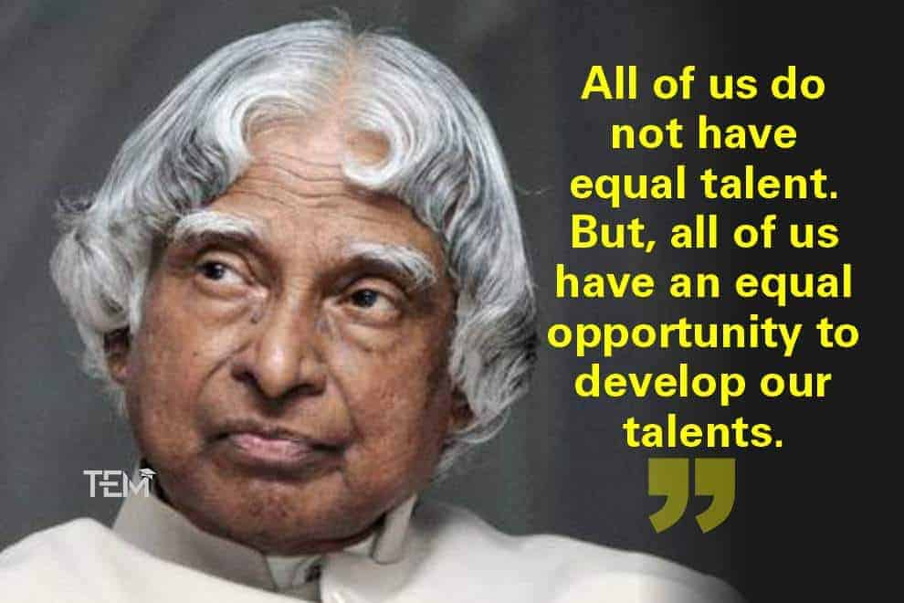
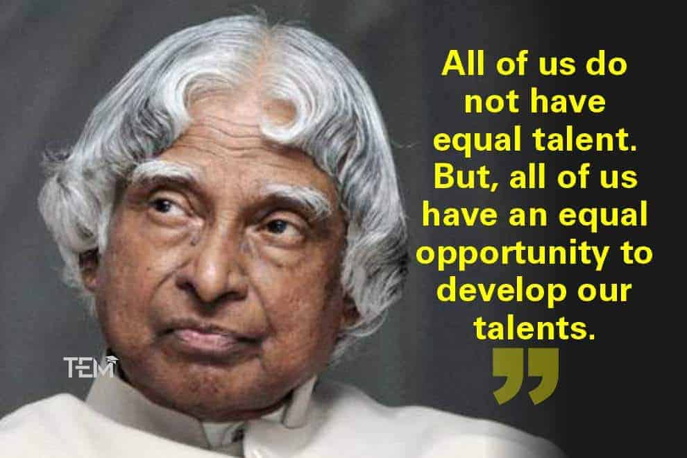

A.P.J. Abdul Kalam, in full Avul Pakir Jainulabdeen Abdul Kalam, (born October 15, 1931, Rameswaram, India and died July 27, 2015, Shillong), Indian scientist and politician who played a leading role in the development of India's missile and nuclear weapons programs. He was president of India from 2002 to 2007.
He spent four decades of his life as a researcher and science head, primarily at the Defense Research and Development Organization (DRDO) and Indian Space Research Organization (ISRO) and was personally required in India's civilian space program and military rocket advancement efforts.